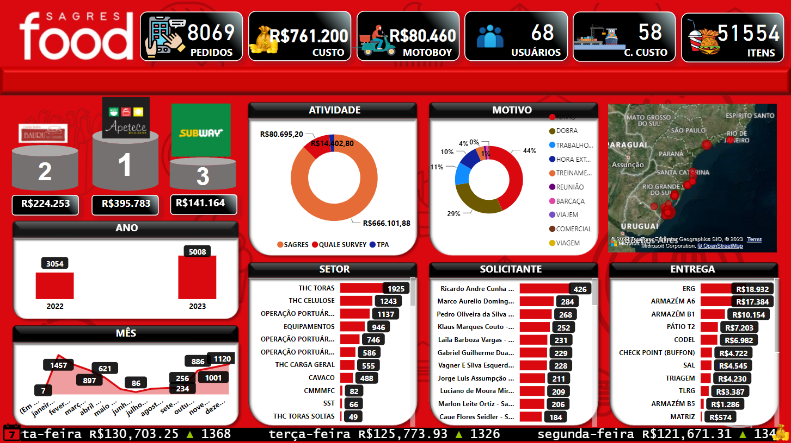
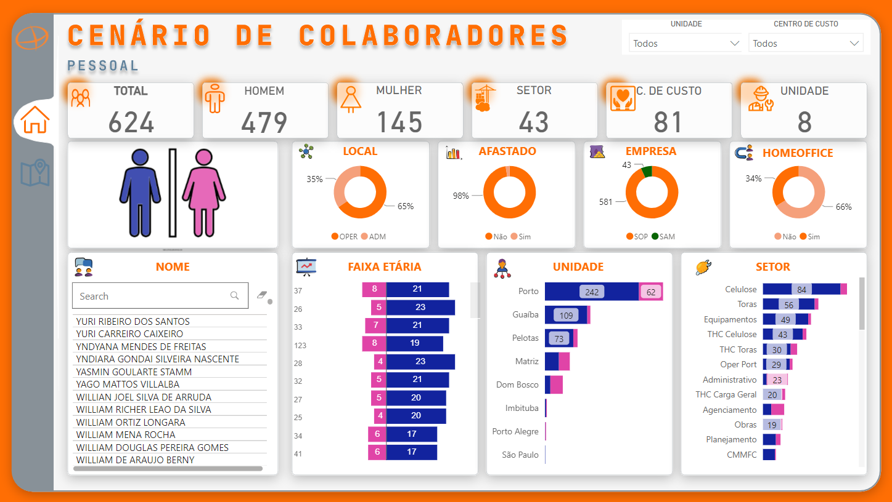

Sobre mim
Sou Diego Alves, um desenvolvedor de sistemas com mais de 15 anos de experiência em criar soluções inovadoras que aprimoram a eficiência operacional. Minha carreira é marcada pela criação de aplicativos personalizados, como Segurança 360º e Sagres FOOD, que simplificam processos complexos, melhoram a conformidade e impulsionam a eficiência. Além disso, minha capacidade de extrair insights de dados complexos trouxe benefícios financeiros às empresas, utilizando a plataforma Power Platform. Meu compromisso social é evidente em meu trabalho voluntário, capacitando jovens e promovendo a diversidade e inclusão. Minhas soluções não apenas agregam valor, mas também causam um impacto positivo na sociedade.
Analise de Dados
Minhas qualidades em análise de dados são uma parte essencial do meu perfil profissional. Possuo a habilidade excepcional de interpretar e extrair insights significativos de conjuntos complexos de dados, transformando informações em ações estratégicas. Minha sólida compreensão das ferramentas analíticas e minha capacidade de identificar tendências e padrões me permitem tomar decisões informadas e direcionar as operações com base em evidências. Além disso, minha expertise em criar aplicativos personalizados para análise de dados demonstra meu compromisso em levar a eficiência e a precisão para o cerne de qualquer projeto em que esteja envolvido. Minhas qualidades em análise de dados não apenas impulsionam o sucesso das operações, mas também contribuem para uma tomada de decisão mais ágil e estratégica.
Agregar Valor
Suporte e na capacidade de agregar valor por meio do desenvolvimento de soluções são pilares da minha abordagem profissional. Tenho um forte compromisso com a excelência no atendimento ao cliente e na resolução de problemas de forma eficiente. Além disso, minha habilidade em criar soluções personalizadas vai além de resolver desafios imediatos; ela transforma a maneira como as operações funcionam, tornando-as mais eficazes e eficientes. Ao identificar as necessidades dos clientes e desenvolver soluções adaptadas, busco continuamente aprimorar a experiência do usuário e agregar valor real às organizações. Isso se traduz não apenas em um suporte de alta qualidade, mas também em uma parceria estratégica que impulsiona o sucesso a longo prazo.
Tecnologias
Desenvolvo tecnologias inovadoras que abrangem uma ampla variedade de áreas, desde inteligência artificial e aprendizado de máquina até automação de processos e soluções de software personalizadas. Minha expertise inclui a criação de algoritmos avançados para análise de dados, desenvolvimento de chatbots e assistentes virtuais altamente eficazes, bem como a implementação de sistemas de automação de fluxo de trabalho, como o Power Automate da Microsoft. Combinando conhecimento técnico e criatividade, estou comprometido em impulsionar a inovação e melhorar a eficiência em diversas indústrias.
O Power Automate é uma plataforma da Microsoft para automatização de fluxos de trabalho e tarefas de negócios. Ele integra aplicativos, permite criar fluxos de trabalho personalizados e automatiza ações com base em gatilhos, facilitando a eficiência operacional. Além disso, oferece recursos de aprovação e notificações para melhorar a colaboração e o acompanhamento de processos.
O Power Virtual Agents é uma plataforma de criação de chatbots da Microsoft que permite desenvolver assistentes virtuais sem codificação extensiva. Ele simplifica a interação com os clientes, automatiza o atendimento ao cliente e fornece respostas rápidas por meio de conversas naturais e personalizadas.
O Power BI é uma ferramenta de visualização de dados da Microsoft que transforma informações em gráficos interativos e relatórios envolventes. Ele permite análises avançadas, painéis de controle e compartilhamento de insights de negócios de maneira acessível e intuitiva, facilitando a tomada de decisões informadas.
Power Apps é uma plataforma da Microsoft que permite criar aplicativos personalizados sem a necessidade de programação intensiva. Com uma interface intuitiva, os usuários podem desenvolver soluções interativas para dispositivos móveis e web, agilizando processos e melhorando a produtividade.

Integer sit amet risus et erat imperdiet finibus. Nam lacus nunc, vulputate id ex eget, euismod auctor augue.
Projetos
Nesta seção, estou empolgado em apresentar meus projetos de desenvolvimento de soluções inovadoras. Aqui, você encontrará uma variedade de iniciativas nas quais tenho trabalhado, cada uma delas criada com o objetivo de abordar desafios reais e encontrar maneiras criativas e eficazes de resolvê-los. Espero que esses projetos inspirem e demonstrem meu comprometimento com a inovação e a busca de soluções que tragam um impacto positivo. Convido você a explorar e conhecer mais sobre cada uma dessas iniciativas que refletem minha paixão pelo desenvolvimento tecnológico e pela resolução de problemas.
Food
Nesse projeto integrei Power Apps e Power BI, desenvolvendo um aplicativo para realização de requisições de refeição dentro da organização. Ele gera um relatório em HTML enviado ao fornecedores com a relatório do pedido. O mesmo ainda permite a realização de um feedback sobre sua refeição. Aplicação esta conectada em tempo real ao um dashboard desenvolvido em power BI. A ferramenta também contata com um fluxo criado em power automate que notifica, smartphone, pessoas chave em tempo real com um push notification. Ao lado você pode interagir com o APP.
 Acesse dashboar{kind=link}
Colaboradores
Neste projeto, desenvolvi um sistema de Business Intelligence (BI) que agiliza a localização dos colaboradores da empresa e fornece informações valiosas para a gestão, incluindo dados demográficos como faixa etária. O destaque é um dashboard intuitivo que oferece uma visão em tempo real da localização dos funcionários, auxiliando no planejamento de equipe. Além disso, a análise da faixa etária capacita a tomada de decisões estratégicas em relação ao recrutamento, treinamento e desenvolvimento, contribuindo para a eficiência e competitividade da empresa. Este projeto demonstra nosso compromisso com a inovação e a melhoria contínua na gestão de recursos humanos.
 Acesse dashboarContato
Fique à vontade para entrar em contato, ficarei encantado em transformar suas ideias em linhas de código.